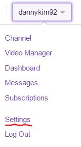
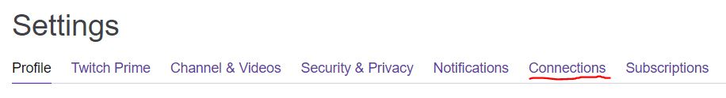
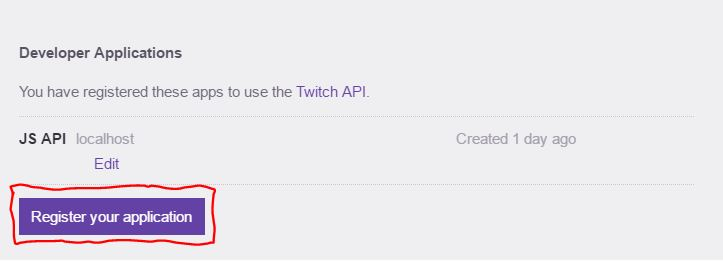
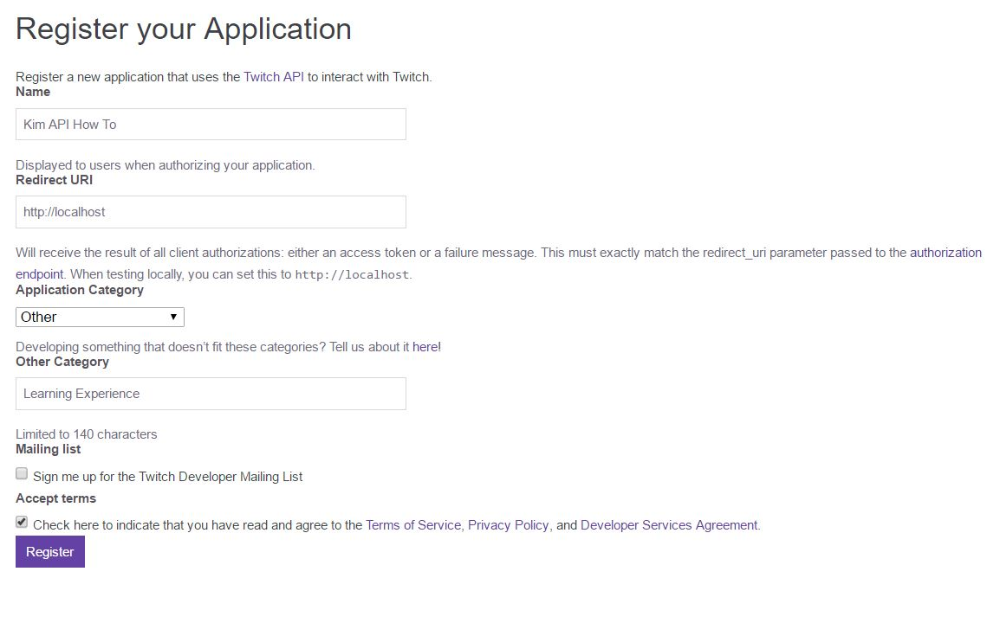

The first step to using an API is getting an API key which will allow us to access the server's database. API keys are unique to each user and should be kept private. Usually users are allotted a limited number of requests to the server per day to avoid an overload of requests. One important reason that API keys are unique and private is to prevent bots from overloading a server with requests, which might shut down the server (nobody wants that). CHANGE THIS --> For this guide, we will be using my API key (which I will delete/change once this project is graded).
First, go to twitch.tv and create an account. Once you have created an account, go to Settings >> Connections and click on the "Register your application" button at the bottom of the page.
  Create a name for your application, mine was "JS API" and for the redirect URL you can simply put "http://localhost". The other settings below you may change at your preference. Once you have registered your application you will receieve a Client ID/API key. Remember once again that keeping your API key private is very important!
Now that we have an API key and know what an API does, let's explore those capabilities and see what sort of information we can retrieve from the Twitch API.
Previous Next